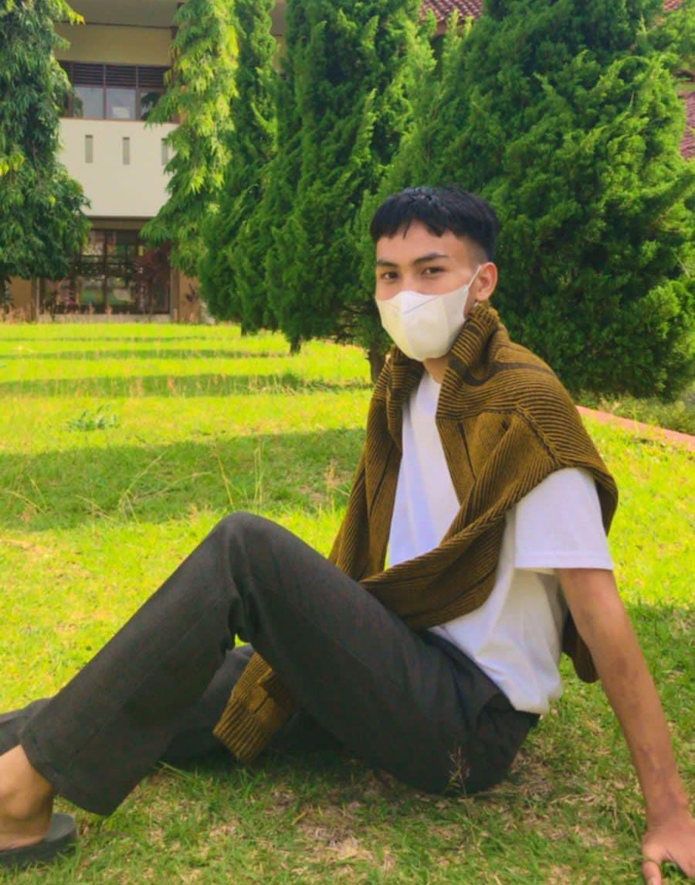

|  | TENTANG SAYANama saya Ilham, saya lulusan Program Kursus/pelatihan 1 Tahun di Pesantren Teknologi Informasi dan Komunikasi (PeTIK) Depok, Jurusan Pengelolaan Sistem dan Jaringan. Saya memiliki ketertarikan dengan Dunia IT dan saya memiliki pengalaman saat saya belajar di pendidikan yang sebelumnya. Oleh karena itu, saya memiliki kompetensi sesuai bidang tersebut sehingga saya bisa mengembangkan keterampilan saya secara profesional agar dapat berkontribusi dalam pekerjaan. |
| Nama | Ilham Maulana Hakim |
| Jenis Kelamin | Laki-laki |
| Tempat dan Tanggal Lahir | Sukabumi, 11 Agustus 2001 |
| Berat / Tinggi Badan | 45kg / 168cm |
| Alamat | Kp. Sukamanah Rt/Rw 10/03 Ds. Bojonggenteng, Kec. Jampangkulon, Kab. Sukabumi |
| Nomor Telepon | 085793323519 |
| ilhammln1108@gmail.com |
| Tahun | Tempat Pendidikan |
| 2021-Sekarang | Sekolah Tinggi STT Terpadu Nurul Fikri |
| 2020-2021 | Pesantren PeTIK Depok |
| 2017-2020 | SMA Negeri 1 Jampangkulon |